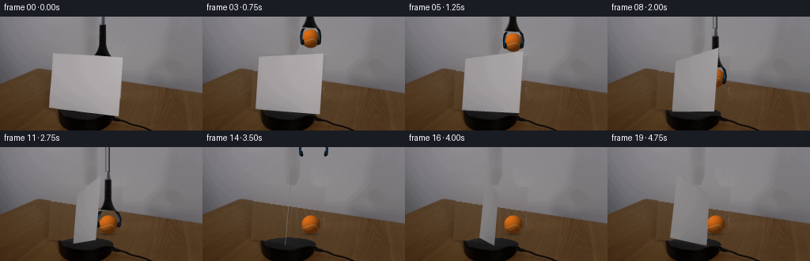
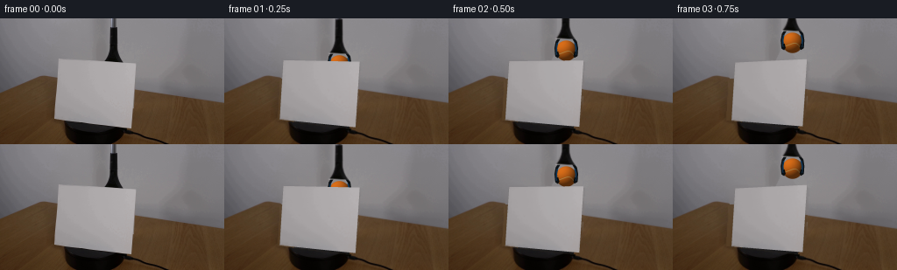
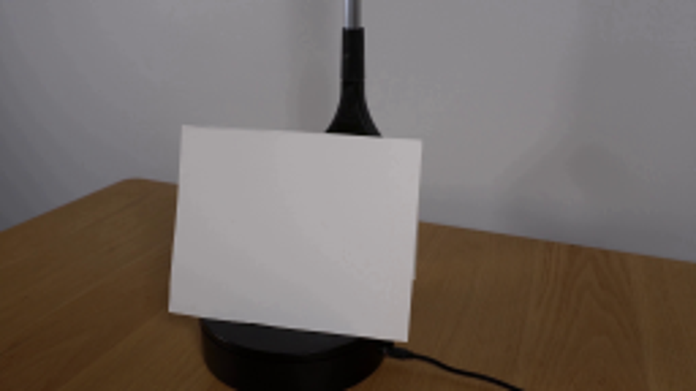
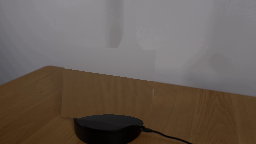
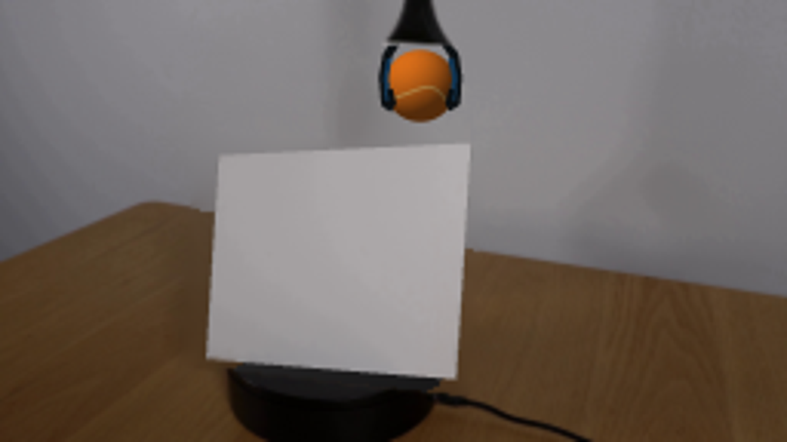

CODING AGENTS AS PIXEL WORLD MODELS
traex/GPT-6.1-Sol · 0006
点击播放 · 原生 RGB 像素
逐轮保存的候选
回放视频、检查图与代码变化。
每份候选均可单独播放。实际图片检查记录在下方工具轨迹中。
候选 01播放与检查图
点击播放 · 原生 RGB 像素

展开代码变化
--- 上一保存版本
+++ 本次保存版本
@@ -0,0 +1,198 @@
+from pathlib import Path
+import numpy as np
+from PIL import Image, ImageDraw
+import cv2
+from scipy.ndimage import gaussian_filter, map_coordinates
+from scipy.spatial import cKDTree
+from artifact_io import save
+
+ROOT = Path(__file__).resolve().parent
+W,H,S = 256,144,4
+rng=np.random.default_rng(8437)
+first=np.array(Image.open(ROOT/'first_frame.png').convert('RGB'))
+orig=first.astype(float)
+y,x=np.mgrid[:H,:W]
+quad=np.array([[66.6,46.3],[154.7,51.0],[149.8,125.2],[62.2,115.4]],np.float32)
+
+def poly_mask(points, size=(W,H), scale=1):
+ im=Image.new('L',(size[0]*scale,size[1]*scale))
+ ImageDraw.Draw(im).polygon([(float(a)*scale,float(b)*scale) for a,b in points],fill=255)
+ return np.array(im,dtype=float)/255
+
+cardmask=poly_mask(quad)
+toolpoly=[(125.9,-2),(131.8,-2),(132.2,10.0),(134,10),(134,33),(135.4,40),(138.0,46),(141.1,50.6),(118.2,49.6),(122.5,42),(125.2,34),(125.9,11)]
+toolmask=poly_mask(toolpoly)
+missing=np.maximum(cardmask,toolmask)
+missing=cv2.dilate(missing.astype(np.float32),np.ones((3,3),np.uint8))
+backline=np.where(x<50,85.6-.395*x,65.9+.146*(x-50))
+wall=y<backline
+
+def basis(x,y):
+ a=(x-128)/128; b=(y-72)/72
+ return np.stack([np.ones_like(a),a,b,a*a,a*b,b*b,a*a*b,a*b*b,a**3,b**3],axis=-1)
+b=basis(x,y)
+
+def fit_region(valid,regularize=.06):
+ A=b[valid]; B=orig[valid]
+ reg=np.diag([0,0,0,regularize,regularize,regularize,regularize,regularize,regularize,regularize])
+ return b @ np.linalg.solve(A.T@A+reg,A.T@B)
+wallfit=fit_region(wall & (missing<.01))
+tablevalid=(~wall)&(missing<.01)&(orig[:,:,0]>62)&(orig[:,:,1]>43)&(orig[:,:,2]>18)
+tablefit=fit_region(tablevalid,2)
+# Actual wood texture, projected from the unobscured right-hand part of the same table.
+highpass=orig-gaussian_filter(orig,sigma=(2.4,2.4,0))
+sx=175+.55*(x-60)-.20*(y-68)
+sy=99+.65*(y-68)
+sx=np.clip(sx,162,245); sy=np.clip(sy,97,142)
+wood=np.stack([map_coordinates(highpass[:,:,c],[sy,sx],order=1,mode='reflect') for c in range(3)],axis=-1)
+wallnoise=rng.normal(0,.3,(H,W,1))
+replacement=np.where(wall[:,:,None],wallfit+wallnoise,tablefit+wood)
+# Feather just within the exposed object's outline, keeping the room and original table fixed.
+a=cv2.GaussianBlur(missing,(3,3),.48)
+plate=orig*(1-a[:,:,None])+replacement*a[:,:,None]
+# Reconstruct only the previously occluded sliver of the platform's top.
+ex=(x-108)/35.1; ey=(y-122.8)/8.9
+disk=ex*ex+ey*ey<1
+shade=(29-6*ey-4*ex)[...,None]*np.array([1.0,.98,1.01])
+fill=disk & (missing>.05) & (y>=114)
+plate[fill]=shade[fill]
+# Original visible tool cutout, used throughout the motion.
+talpha=cv2.GaussianBlur(toolmask.astype(np.float32),(3,3),.32)
+toolrgba=np.dstack([orig,talpha*255]).astype(np.uint8)
+# Texture the sheet with the photographed paper, rather than a flat painted polygon.
+TW,TH=440,352
+src=np.array([[0,0],[TW-1,0],[TW-1,TH-1],[0,TH-1]],np.float32)
+tex=cv2.warpPerspective(first,cv2.getPerspectiveTransform(quad,src),(TW,TH),flags=cv2.INTER_LINEAR,borderMode=cv2.BORDER_REPLICATE)
+tex=gaussian_filter(tex.astype(float),sigma=(.55,.55,0))
+# Remove the dark rim contaminating the resampled paper's edges.
+tex[:5]=tex[5:6]; tex[-5:]=tex[-6:-5]; tex[:,:5]=tex[:,5:6]; tex[:,-5:]=tex[:,-6:-5]
+
+# Camera-space, analytic rotation of a thin vertical sheet about its spindle.
+p=np.array([.046,-.25,.078,-.2726,.15694,4.3828,1.2051,320.])
+def card_points(theta):
+ yaw,pitch,roll,X,Y,Z,w,f=p
+ a=yaw+theta
+ rz=np.array([[np.cos(roll),-np.sin(roll),0],[np.sin(roll),np.cos(roll),0],[0,0,1]])
+ rx=np.array([[1,0,0],[0,np.cos(pitch),-np.sin(pitch)],[0,np.sin(pitch),np.cos(pitch)]])
+ ry=np.array([[np.cos(a),0,np.sin(a)],[0,1,0],[-np.sin(a),0,np.cos(a)]])
+ q=np.array([[-w/2,-.5,0],[w/2,-.5,0],[w/2,.5,0],[-w/2,.5,0]])@(rz@rx@ry).T+[X,Y,Z]
+ return (q[:,:2]/q[:,2:])*f+[128,72]
+q0=card_points(0)
+
+def smooth(u):
+ u=np.clip(u,0,1); return u*u*(3-2*u)
+
+def trajectory(t):
+ # Lift the already-held ball above the screen, then lower it gently onto the wood.
+ if t<.75: cy=63-35*smooth(t/.75)
+ elif t<1.0: cy=28
+ else: cy=28+70*smooth((t-1.0)/1.55)
+ cx=130+7*smooth(t/.85)
+ return cx,cy
+
+hh,ww=H*S,W*S
+Y,X=np.mgrid[:hh,:ww]; XX=(X+.5)/S; YY=(Y+.5)/S
+felt=gaussian_filter(rng.normal(size=(hh,ww)),.52)
+# A continuous tennis-ball seam on the spherical surface.
+lam=np.linspace(0,2*np.pi,1400)
+lat=.58*np.sin(2*lam)
+seam=np.stack([np.cos(lat)*np.cos(lam),np.sin(lat),np.cos(lat)*np.sin(lam)],axis=1)
+ax=.58; ay=.37; az=.6
+rx=np.array([[1,0,0],[0,np.cos(ax),-np.sin(ax)],[0,np.sin(ax),np.cos(ax)]])
+ry=np.array([[np.cos(ay),0,np.sin(ay)],[0,1,0],[-np.sin(ay),0,np.cos(ay)]])
+rz=np.array([[np.cos(az),-np.sin(az),0],[np.sin(az),np.cos(az),0],[0,0,1]])
+seam=seam@(rz@ry@rx).T
+seamtree=cKDTree(seam[seam[:,2]<.05])
+light=np.array([-.48,-.65,-.59]); light/=np.linalg.norm(light)
+
+def render_ball(img,cx,cy,t):
+ r=11.75
+ nx=(XX-cx)/r; ny=(YY-cy)/r
+ rr=nx*nx+ny*ny
+ region=rr<1.1
+ nz=-np.sqrt(np.maximum(0,1-rr))
+ norm=np.stack([nx,ny,nz],-1)
+ lambert=np.maximum(0,norm@light)
+ illum=.38+.62*lambert
+ color=np.array([219.,110.,24.])[None,None,:]*illum[:,:,None]
+ # Low roughness felt variation, not a shiny plastic sphere.
+ color+=felt[:,:,None]*np.array([3.0,2.5,1.2])
+ d=np.ones((hh,ww))
+ d[region]=seamtree.query(norm[region],workers=1)[0]
+ sa=np.clip((.048-d)/.017,0,1)*.80
+ sc=np.array([232.,185.,102.])[None,None,:]*(.43+.57*lambert[:,:,None])
+ color=color*(1-sa[:,:,None])+sc*sa[:,:,None]
+ alpha=np.clip((1-np.sqrt(rr))*r*S+.45,0,1)
+ alpha*=np.clip(1+felt*.045,0,1)
+ return img*(1-alpha[:,:,None])+color*alpha[:,:,None]
+
+def draw_tool(img,cx,cy,open_amount=0):
+ # Flexible rubber-tipped forks around the ball; blue side trim identifies the grabber.
+ lay=Image.new('RGBA',(ww,hh),(0,0,0,0)); d=ImageDraw.Draw(lay)
+ def path(points,col,width):
+ d.line([(a*S,b*S) for a,b in points],fill=col,width=max(1,round(width*S)),joint='curve')
+ oa=open_amount
+ for side in [-1,1]:
+ pts=[(cx+side*7,cy-16),(cx+side*(10.8+oa*.4),cy-10),(cx+side*(12.0+oa),cy-3),(cx+side*(11.4+oa),cy+5.5),(cx+side*(8.8+oa),cy+7)]
+ path(pts,(12,16,19,255),3.1)
+ blue=[(cx+side*(10.0+oa*.4),cy-9),(cx+side*(11.2+oa),cy-3),(cx+side*(10.7+oa),cy+4.5)]
+ path(blue,(18,54,84,255),1.8)
+ path([(cx+side*(10.2+oa),cy+1),(cx+side*(8.9+oa),cy+6)],(10,13,15,255),2.1)
+ arr=np.asarray(lay).astype(float); al=arr[:,:,3:]/255
+ img=img*(1-al)+arr[:,:,:3]*al
+ dx=cx-130; dy=cy-63
+ # Newly exposed length of the same narrow silver shaft as it descends.
+ if dy>0:
+ shaft=Image.new('RGBA',(ww,hh),(0,0,0,0)); sd=ImageDraw.Draw(shaft)
+ for xx in range(126*S,132*S):
+ val=[91,119,136,124,76,48][min(5,(xx-126*S)//S)]
+ sd.line([(xx+dx*S,0),(xx+dx*S,(dy+1)*S)],fill=(val,val,val+1,255),width=1)
+ ar=np.array(shaft).astype(float); aa=ar[:,:,3:]/255
+ img=img*(1-aa)+ar[:,:,:3]*aa
+ M=np.array([[S,0,dx*S],[0,S,dy*S]],float)
+ tr=cv2.warpAffine(toolrgba,M,(ww,hh),flags=cv2.INTER_LINEAR,borderMode=cv2.BORDER_CONSTANT)
+ aa=tr[:,:,3:].astype(float)/255
+ img=img*(1-aa)+tr[:,:,:3]*aa
+ return img
+
+
+def frame(t):
+ theta=np.deg2rad(24*t)
+ pts=card_points(theta)+(quad-q0)*abs(np.cos(theta))
+ im=cv2.resize(np.clip(plate,0,255).astype(np.float32),(ww,hh),interpolation=cv2.INTER_CUBIC).astype(float)
+ cx,cy=trajectory(t)
+ # Soft stationary contact shadow forms as the ball reaches the table.
+ close=smooth((cy-75)/23)
+ shadow=np.exp(-(((XX-cx)/12)**2+((YY-110)/2.3)**2)*1.9)*.36*close
+ im*=1-shadow[:,:,None]
+ im=render_ball(im,cx,cy,t)
+ if t<2.6:
+ tcx,tcy=cx,cy; oa=0
+ else:
+ tcx=cx+4*smooth((t-2.6)/1.2)
+ tcy=98-145*smooth((t-2.6)/1.5)
+ oa=5*smooth((t-2.6)/.27)
+ im=draw_tool(im,tcx,tcy,oa)
+ # Paper's thickness and reflected indoor illumination as its normal rotates.
+ face_light=1-.20*np.sin(theta)**2
+ if theta>np.pi/2: face_light-=.045
+ paper=np.clip(tex*face_light,0,255).astype(np.float32)
+ hom=cv2.getPerspectiveTransform(src,(pts*S).astype(np.float32))
+ warped=cv2.warpPerspective(paper,hom,(ww,hh),flags=cv2.INTER_LINEAR,borderMode=cv2.BORDER_REPLICATE)
+ # Thin visible edge, especially apparent at the near-edge-on phase.
+ edge=Image.new('RGBA',(ww,hh),(0,0,0,0)); ed=ImageDraw.Draw(edge)
+ P=[tuple(v) for v in pts*S]
+ ed.line(P+[P[0]],fill=(116,114,112,255),width=2,joint='curve')
+ ar=np.array(edge).astype(float); aa=ar[:,:,3:]/255
+ im=im*(1-aa)+ar[:,:,:3]*aa
+ mask=poly_mask(pts,scale=S)
+ # Subpixel edge softness imitates the source camera's focus.
+ mask=cv2.GaussianBlur(mask.astype(np.float32),(3,3),.42)
+ im=im*(1-mask[:,:,None])+warped*mask[:,:,None]
+ im=cv2.resize(im.astype(np.float32),(W,H),interpolation=cv2.INTER_AREA)
+ return np.clip(np.rint(im),0,255).astype(np.uint8)
+
+if __name__=='__main__':
+ frames=np.stack([first]+[frame(i/4) for i in range(1,20)])
+ save(frames,ROOT)
+ Image.fromarray(np.clip(plate,0,255).astype(np.uint8)).save(ROOT/'.tmp/background.png')
候选 02播放与检查图
点击播放 · 原生 RGB 像素


展开代码变化
--- 上一保存版本 +++ 本次保存版本 @@ -2,7 +2,7 @@ import numpy as np from PIL import Image, ImageDraw import cv2 -from scipy.ndimage import gaussian_filter, map_coordinates +from scipy.ndimage import gaussian_filter, map_coordinates, distance_transform_edt from scipy.spatial import cKDTree from artifact_io import save @@ -23,7 +23,7 @@ toolpoly=[(125.9,-2),(131.8,-2),(132.2,10.0),(134,10),(134,33),(135.4,40),(138.0,46),(141.1,50.6),(118.2,49.6),(122.5,42),(125.2,34),(125.9,11)] toolmask=poly_mask(toolpoly) missing=np.maximum(cardmask,toolmask) -missing=cv2.dilate(missing.astype(np.float32),np.ones((3,3),np.uint8)) +missing=cv2.dilate(missing.astype(np.float32),np.ones((7,7),np.uint8)) backline=np.where(x<50,85.6-.395*x,65.9+.146*(x-50)) wall=y<backline @@ -45,9 +45,27 @@ sy=99+.65*(y-68) sx=np.clip(sx,162,245); sy=np.clip(sy,97,142) wood=np.stack([map_coordinates(highpass[:,:,c],[sy,sx],order=1,mode='reflect') for c in range(3)],axis=-1) -wallnoise=rng.normal(0,.3,(H,W,1)) -replacement=np.where(wall[:,:,None],wallfit+wallnoise,tablefit+wood) -# Feather just within the exposed object's outline, keeping the room and original table fixed. +# Harmonic continuation of room illumination across the occluded region, +# separately on the wall and on the wooden plane. Boundary pixels are +# copied from the photograph, so no artificial rectangular brightness rim remains. +softorig=gaussian_filter(orig,sigma=(.7,.7,0)) +cross=np.array([[0,1,0],[1,0,1],[0,1,0]],np.float32) +def continue_light(model,domain,valid): + residual=softorig-model + nearest=distance_transform_edt(~valid,return_distances=False,return_indices=True) + val=residual[nearest[0],nearest[1]].astype(np.float32) + update=domain & ~valid + count=cv2.filter2D(domain.astype(np.float32),-1,cross,borderType=cv2.BORDER_CONSTANT) + for _ in range(1600): + neighbors=cv2.filter2D(val*domain[:,:,None],-1,cross,borderType=cv2.BORDER_CONSTANT) + avg=neighbors/np.maximum(count[:,:,None],1) + val[update]=avg[update] + return model+val +wallfill=continue_light(wallfit,wall,wall & (missing<.01)) +tablefill=continue_light(tablefit,~wall,tablevalid) +distance=distance_transform_edt(missing>.1) +texturefade=np.minimum(distance/6,1) +replacement=np.where(wall[:,:,None],wallfill,tablefill+wood*texturefade[:,:,None]*.7) a=cv2.GaussianBlur(missing,(3,3),.48) plate=orig*(1-a[:,:,None])+replacement*a[:,:,None] # Reconstruct only the previously occluded sliver of the platform's top.
候选 03播放与检查图
可观测工具轨迹
实际执行的命令与返回图片。
命令 1exit 0
/bin/bash -lc "ls -la && cat prompt.txt && printf '\\n--- RULES ---\\n' && cat GENERATION_RULES.md"
命令 2exit 0
/bin/bash -lc "cat artifact_io.py && python - <<'PY'
from PIL import Image
im=Image.open('first_frame.png'); print(im.size)
im.resize((1024,576)).save('.tmp/zoom.png')
PY"命令 3exit 0
/bin/bash -lc "python - <<'PY' import importlib.util for m in ['numpy','PIL','cv2','scipy']: print(m, bool(importlib.util.find_spec(m))) PY"
命令 4exit 0
/bin/bash -lc "cat > .tmp/fit.py <<'PY'
import numpy as np
from scipy.optimize import least_squares
from scipy.spatial.transform import Rotation
pts=np.array([[67,46.5],[154.5,51],[149.5,125.2],[62,115.2]])
# camera: coordinate +z away, +y screen down
def proj(p, angle=0):
yaw,pitch,roll,X,Y,Z,w,f=p
rz=np.array([[np.cos(roll),-np.sin(roll),0],[np.sin(roll),np.cos(roll),0],[0,0,1]])
rx=np.array([[1,0,0],[0,np.cos(pitch),-np.sin(pitch)],[0,np.sin(pitch),np.cos(pitch)]])
a=yaw+angle
ry=np.array([[np.cos(a),0,np.sin(a)],[0,1,0],[-np.sin(a),0,np.cos(a)]])
R=rz@rx@ry
q=np.array([[-w/2,-.5,0],[w/2,-.5,0],[w/2,.5,0],[-w/2,.5,0]])@R.T + [X,Y,Z]
return q[:,:2]/q[:,2:]*f+[128,72]
p=least_squares(lambda p:(proj(p)-pts).ravel(), [0.25,.2,.06,-.3,.2,3.5,1.2,260],bounds=([-1,-1,-1,-3,-3,1,.6,100],[1,1,1,3,3,10,2,600]),max_nfev=5000).x
print(p, proj(p), 'error',np.max(np.abs(proj(p)-pts)))
for a in [0,15,30,45,60,75,90]:print(a, proj(p,a*np.pi/180).round(1))
np.save('.tmp/card_params.npy',p)
PY
python .tmp/fit.py"命令 5exit 0
/bin/bash -lc "cat > .tmp/fit2.py <<'PY'
exec(open('.tmp/fit.py').read().split('p=least')[0])
for pitch in [-.15,-.25,-.32,-.4]:
def wrap(a):return np.array([a[0],pitch,a[1],a[2],a[3],a[4],a[5],320])
p=least_squares(lambda a:(proj(wrap(a))-pts).ravel(),[.35,.075,-.3,.2,4,1.25],max_nfev=10000).x
p=wrap(p)
print('pitch',pitch,'err',np.max(np.abs(proj(p)-pts)),p)
for a in [0,30,60,90,120,180]: print(a,proj(p,a*np.pi/180).round(1))
if pitch==-.25:np.save('.tmp/card_params.npy',p)
PY
python .tmp/fit2.py"命令 6exit 0
/bin/bash -lc "cat > generate.py <<'PY'
from pathlib import Path
import numpy as np
from PIL import Image, ImageDraw
import cv2
from scipy.ndimage import gaussian_filter, map_coordinates
from scipy.spatial import cKDTree
from artifact_io import save
ROOT = Path(__file__).resolve().parent
W,H,S = 256,144,4
rng=np.random.default_rng(8437)
first=np.array(Image.open(ROOT/'first_frame.png').convert('RGB'))
orig=first.astype(float)
y,x=np.mgrid[:H,:W]
quad=np.array([[66.6,46.3],[154.7,51.0],[149.8,125.2],[62.2,115.4]],np.float32)
def poly_mask(points, size=(W,H), scale=1):
im=Image.new('L',(size[0]*scale,size[1]*scale))
ImageDraw.Draw(im).polygon([(float(a)*scale,float(b)*scale) for a,b in points],fill=255)
return np.array(im,dtype=float)/255
cardmask=poly_mask(quad)
toolpoly=[(125.9,-2),(131.8,-2),(132.2,10.0),(134,10),(134,33),(135.4,40),(138.0,46),(141.1,50.6),(118.2,49.6),(122.5,42),(125.2,34),(125.9,11)]
toolmask=poly_mask(toolpoly)
missing=np.maximum(cardmask,toolmask)
missing=cv2.dilate(missing.astype(np.float32),np.ones((3,3),np.uint8))
backline=np.where(x<50,85.6-.395*x,65.9+.146*(x-50))
wall=y<backline
def basis(x,y):
a=(x-128)/128; b=(y-72)/72
return np.stack([np.ones_like(a),a,b,a*a,a*b,b*b,a*a*b,a*b*b,a**3,b**3],axis=-1)
b=basis(x,y)
def fit_region(valid,regularize=.06):
A=b[valid]; B=orig[valid]
reg=np.diag([0,0,0,regularize,regularize,regularize,regularize,regularize,regularize,regularize])
return b @ np.linalg.solve(A.T@A+reg,A.T@B)
wallfit=fit_region(wall & (missing<.01))
tablevalid=(~wall)&(missing<.01)&(orig[:,:,0]>62)&(orig[:,:,1]>43)&(orig[:,:,2]>18)
tablefit=fit_region(tablevalid,2)
# Actual wood texture, projected from the unobscured right-hand part of the same table.
highpass=orig-gaussian_filter(orig,sigma=(2.4,2.4,0))
sx=175+.55*(x-60)-.20*(y-68)
sy=99+.65*(y-68)
sx=np.clip(sx,162,245); sy=np.clip(sy,97,142)
wood=np.stack([map_coordinates(highpass[:,:,c],[sy,sx],order=1,mode='reflect') for c in range(3)],axis=-1)
wallnoise=rng.normal(0,.3,(H,W,1))
replacement=np.where(wall[:,:,None],wallfit+wallnoise,tablefit+wood)
# Feather just within the exposed object's outline, keeping the room and original table fixed.
a=cv2.GaussianBlur(missing,(3,3),.48)
plate=orig*(1-a[:,:,None])+replacement*a[:,:,None]
# Reconstruct only the previously occluded sliver of the platform's top.
ex=(x-108)/35.1; ey=(y-122.8)/8.9
disk=ex*ex+ey*ey<1
shade=(29-6*ey-4*ex)[...,None]*np.array([1.0,.98,1.01])
fill=disk & (missing>.05) & (y>=114)
plate[fill]=shade[fill]
# Original visible tool cutout, used throughout the motion.
talpha=cv2.GaussianBlur(toolmask.astype(np.float32),(3,3),.32)
toolrgba=np.dstack([orig,talpha*255]).astype(np.uint8)
# Texture the sheet with the photographed paper, rather than a flat painted polygon.
TW,TH=440,352
src=np.array([[0,0],[TW-1,0],[TW-1,TH-1],[0,TH-1]],np.float32)
tex=cv2.warpPerspective(first,cv2.getPerspectiveTransform(quad,src),(TW,TH),flags=cv2.INTER_LINEAR,borderMode=cv2.BORDER_REPLICATE)
tex=gaussian_filter(tex.astype(float),sigma=(.55,.55,0))
# Remove the dark rim contaminating the resampled paper's edges.
tex[:5]=tex[5:6]; tex[-5:]=tex[-6:-5]; tex[:,:5]=tex[:,5:6]; tex[:,-5:]=tex[:,-6:-5]
# Camera-space, analytic rotation of a thin vertical sheet about its spindle.
p=np.array([.046,-.25,.078,-.2726,.15694,4.3828,1.2051,320.])
def card_points(theta):
yaw,pitch,roll,X,Y,Z,w,f=p
a=yaw+theta
rz=np.array([[np.cos(roll),-np.sin(roll),0],[np.sin(roll),np.cos(roll),0],[0,0,1]])
rx=np.array([[1,0,0],[0,np.cos(pitch),-np.sin(pitch)],[0,np.sin(pitch),np.cos(pitch)]])
ry=np.array([[np.cos(a),0,np.sin(a)],[0,1,0],[-np.sin(a),0,np.cos(a)]])
q=np.array([[-w/2,-.5,0],[w/2,-.5,0],[w/2,.5,0],[-w/2,.5,0]])@(rz@rx@ry).T+[X,Y,Z]
return (q[:,:2]/q[:,2:])*f+[128,72]
q0=card_points(0)
def smooth(u):
u=np.clip(u,0,1); return u*u*(3-2*u)
def trajectory(t):
# Lift the already-held ball above the screen, then lower it gently onto the wood.
if t<.75: cy=63-35*smooth(t/.75)
elif t<1.0: cy=28
else: cy=28+70*smooth((t-1.0)/1.55)
cx=130+7*smooth(t/.85)
return cx,cy
hh,ww=H*S,W*S
Y,X=np.mgrid[:hh,:ww]; XX=(X+.5)/S; YY=(Y+.5)/S
felt=gaussian_filter(rng.normal(size=(hh,ww)),.52)
# A continuous tennis-ball seam on the spherical surface.
lam=np.linspace(0,2*np.pi,1400)
lat=.58*np.sin(2*lam)
seam=np.stack([np.cos(lat)*np.cos(lam),np.sin(lat),np.cos(lat)*np.sin(lam)],axis=1)
ax=.58; ay=.37; az=.6
rx=np.array([[1,0,0],[0,np.cos(ax),-np.sin(ax)],[0,np.sin(ax),np.cos(ax)]])
ry=np.array([[np.cos(ay),0,np.sin(ay)],[0,1,0],[-np.sin(ay),0,np.cos(ay)]])
rz=np.array([[np.cos(az),-np.sin(az),0],[np.sin(az),np.cos(az),0],[0,0,1]])
seam=seam@(rz@ry@rx).T
seamtree=cKDTree(seam[seam[:,2]<.05])
light=np.array([-.48,-.65,-.59]); light/=np.linalg.norm(light)
def render_ball(img,cx,cy,t):
r=11.75
nx=(XX-cx)/r; ny=(YY-cy)/r
rr=nx*nx+ny*ny
region=rr<1.1
nz=-np.sqrt(np.maximum(0,1-rr))
norm=np.stack([nx,ny,nz],-1)
lambert=np.maximum(0,norm@light)
illum=.38+.62*lambert
color=np.array([219.,110.,24.])[None,None,:]*illum[:,:,None]
# Low roughness felt variation, not a shiny plastic sphere.
color+=felt[:,:,None]*np.array([3.0,2.5,1.2])
d=np.ones((hh,ww))
d[region]=seamtree.query(norm[region],workers=1)[0]
sa=np.clip((.048-d)/.017,0,1)*.80
sc=np.array([232.,185.,102.])[None,None,:]*(.43+.57*lambert[:,:,None])
color=color*(1-sa[:,:,None])+sc*sa[:,:,None]
alpha=np.clip((1-np.sqrt(rr))*r*S+.45,0,1)
alpha*=np.clip(1+felt*.045,0,1)
return img*(1-alpha[:,:,None])+color*alpha[:,:,None]
def draw_tool(img,cx,cy,open_amount=0):
# Flexible rubber-tipped forks around the ball; blue side trim identifies the grabber.
lay=Image.new('RGBA',(ww,hh),(0,0,0,0)); d=ImageDraw.Draw(lay)
def path(points,col,width):
d.line([(a*S,b*S) for a,b in points],fill=col,width=max(1,round(width*S)),joint='curve')
oa=open_amount
for side in [-1,1]:
pts=[(cx+side*7,cy-16),(cx+side*(10.8+oa*.4),cy-10),(cx+side*(12.0+oa),cy-3),(cx+side*(11.4+oa),cy+5.5),(cx+side*(8.8+oa),cy+7)]
path(pts,(12,16,19,255),3.1)
blue=[(cx+side*(10.0+oa*.4),cy-9),(cx+side*(11.2+oa),cy-3),(cx+side*(10.7+oa),cy+4.5)]
path(blue,(18,54,84,255),1.8)
path([(cx+side*(10.2+oa),cy+1),(cx+side*(8.9+oa),cy+6)],(10,13,15,255),2.1)
arr=np.asarray(lay).astype(float); al=arr[:,:,3:]/255
img=img*(1-al)+arr[:,:,:3]*al
dx=cx-130; dy=cy-63
# Newly exposed length of the same narrow silver shaft as it descends.
if dy>0:
shaft=Image.new('RGBA',(ww,hh),(0,0,0,0)); sd=ImageDraw.Draw(shaft)
for xx in range(126*S,132*S):
val=[91,119,136,124,76,48][min(5,(xx-126*S)//S)]
sd.line([(xx+dx*S,0),(xx+dx*S,(dy+1)*S)],fill=(val,val,val+1,255),width=1)
ar=np.array(shaft).astype(float); aa=ar[:,:,3:]/255
img=img*(1-aa)+ar[:,:,:3]*aa
M=np.array([[S,0,dx*S],[0,S,dy*S]],float)
tr=cv2.warpAffine(toolrgba,M,(ww,hh),flags=cv2.INTER_LINEAR,borderMode=cv2.BORDER_CONSTANT)
aa=tr[:,:,3:].astype(float)/255
img=img*(1-aa)+tr[:,:,:3]*aa
return img
def frame(t):
theta=np.deg2rad(24*t)
pts=card_points(theta)+(quad-q0)*abs(np.cos(theta))
im=cv2.resize(np.clip(plate,0,255).astype(np.float32),(ww,hh),interpolation=cv2.INTER_CUBIC).astype(float)
cx,cy=trajectory(t)
# Soft stationary contact shadow forms as the ball reaches the table.
close=smooth((cy-75)/23)
shadow=np.exp(-(((XX-cx)/12)**2+((YY-110)/2.3)**2)*1.9)*.36*close
im*=1-shadow[:,:,None]
im=render_ball(im,cx,cy,t)
if t<2.6:
tcx,tcy=cx,cy; oa=0
else:
tcx=cx+4*smooth((t-2.6)/1.2)
tcy=98-145*smooth((t-2.6)/1.5)
oa=5*smooth((t-2.6)/.27)
im=draw_tool(im,tcx,tcy,oa)
# Paper's thickness and reflected indoor illumination as its normal rotates.
face_light=1-.20*np.sin(theta)**2
if theta>np.pi/2: face_light-=.045
paper=np.clip(tex*face_light,0,255).astype(np.float32)
hom=cv2.getPerspectiveTransform(src,(pts*S).astype(np.float32))
warped=cv2.warpPerspective(paper,hom,(ww,hh),flags=cv2.INTER_LINEAR,borderMode=cv2.BORDER_REPLICATE)
# Thin visible edge, especially apparent at the near-edge-on phase.
edge=Image.new('RGBA',(ww,hh),(0,0,0,0)); ed=ImageDraw.Draw(edge)
P=[tuple(v) for v in pts*S]
ed.line(P+[P[0]],fill=(116,114,112,255),width=2,joint='curve')
ar=np.array(edge).astype(float); aa=ar[:,:,3:]/255
im=im*(1-aa)+ar[:,:,:3]*aa
mask=poly_mask(pts,scale=S)
# Subpixel edge softness imitates the source camera's focus.
mask=cv2.GaussianBlur(mask.astype(np.float32),(3,3),.42)
im=im*(1-mask[:,:,None])+warped*mask[:,:,None]
im=cv2.resize(im.astype(np.float32),(W,H),interpolation=cv2.INTER_AREA)
return np.clip(np.rint(im),0,255).astype(np.uint8)
if __name__=='__main__':
frames=np.stack([first]+[frame(i/4) for i in range(1,20)])
save(frames,ROOT)
Image.fromarray(np.clip(plate,0,255).astype(np.uint8)).save(ROOT/'.tmp/background.png')
PY
python generate.py"命令 7exit 0
/bin/bash -lc "python - <<'PY'
p='generate.py'
s=open(p).read().replace('from scipy.ndimage import gaussian_filter, map_coordinates','from scipy.ndimage import gaussian_filter, map_coordinates, distance_transform_edt')
s=s.replace(\"np.ones((3,3),np.uint8))\\nbackline\", \"np.ones((7,7),np.uint8))\\nbackline\")
a=s.index('wallnoise=rng.normal')
z=s.index('# Reconstruct only',a)
s=s[:a]+'''# Harmonic continuation of room illumination across the occluded region,
# separately on the wall and on the wooden plane. Boundary pixels are
# copied from the photograph, so no artificial rectangular brightness rim remains.
softorig=gaussian_filter(orig,sigma=(.7,.7,0))
cross=np.array([[0,1,0],[1,0,1],[0,1,0]],np.float32)
def continue_light(model,domain,valid):
residual=softorig-model
nearest=distance_transform_edt(~valid,return_distances=False,return_indices=True)
val=residual[nearest[0],nearest[1]].astype(np.float32)
update=domain & ~valid
count=cv2.filter2D(domain.astype(np.float32),-1,cross,borderType=cv2.BORDER_CONSTANT)
for _ in range(1600):
neighbors=cv2.filter2D(val*domain[:,:,None],-1,cross,borderType=cv2.BORDER_CONSTANT)
avg=neighbors/np.maximum(count[:,:,None],1)
val[update]=avg[update]
return model+val
wallfill=continue_light(wallfit,wall,wall & (missing<.01))
tablefill=continue_light(tablefit,~wall,tablevalid)
distance=distance_transform_edt(missing>.1)
texturefade=np.minimum(distance/6,1)
replacement=np.where(wall[:,:,None],wallfill,tablefill+wood*texturefade[:,:,None]*.7)
a=cv2.GaussianBlur(missing,(3,3),.48)
plate=orig*(1-a[:,:,None])+replacement*a[:,:,None]
''' + s[z:]
open(p,'w').write(s)
PY
python generate.py"命令 8exit 0
/bin/bash -lc "python - <<'PY'
from PIL import Image
Image.open('frames/03.png').resize((1024,576)).save('.tmp/frame03.png')
Image.open('frames/19.png').resize((1024,576)).save('.tmp/frame19.png')
PY"命令 9exit 0
/bin/bash -lc "python - <<'PY'
import numpy as np
from PIL import Image
from pathlib import Path
fs=np.stack([np.asarray(Image.open(f'frames/{i:02d}.png')) for i in range(20)])
assert fs.shape==(20,144,256,3) and fs.dtype==np.uint8
assert np.array_equal(fs[0],np.array(Image.open('first_frame.png')))
p=np.load('pixels.npz')['pixels']
assert p.shape==(144,256,20)
print('Verified: 20 RGB frames at 256Ã144; first frame pixel-identical.')
print('Artifacts: pixels.npz, index.html, inspection.png, frames/, generate.py')
PY"视觉工具实际返回图片 1

视觉工具实际返回图片 2

视觉工具实际返回图片 3

视觉工具实际返回图片 4

视觉工具实际返回图片 5

保存候选 3 份；完成命令 9 次；可验证图片返回 5 张。原始 API 响应与完整日志保留在本地。